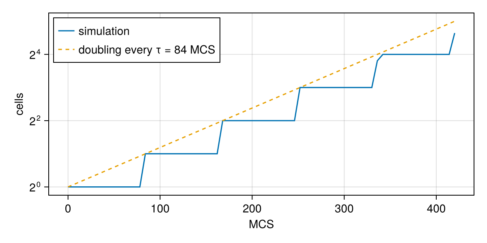
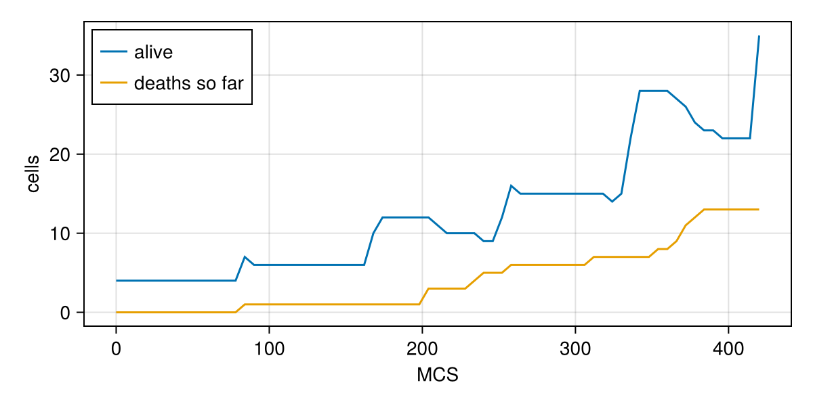

Tutorial 3: growth, division and death
Tissues grow because cells grow and divide, and shrink because cells die. This tutorial builds a growing colony from one cell. You will learn:
- how to give each cell its own state with a
cellvariable; - how to update cell state every MCS with
@after_mcsandPre; - how to divide cells with
@divide, and what happens to the daughters' state; - how to make cells die, and how to extend a model with
@extend.
using Potts, PottsModels, MakiePotts, CairoMakieThe growing monolayer
The OpenVT growing monolayer benchmark starts from one cell. Each cell's target area grows steadily, and a cell that has reached twice the initial area divides along a random plane. This is the model with the parameters of the benchmark's Artistoo implementation (it is the shipped constructor OpenVTGrowingMonolayer); only the lattice is smaller (benchmark: 400×400; here: 80×80) and the run shorter. This tutorial uses that 2024 set as a lighter teaching example; the benchmark's reference model is OpenVTReferenceMonolayer (the manuscript's Table S1, Paper models).
@potts_model GrowingMonolayer begin
@kinds medium cell
@parameters begin
A₀ = 25.0 # initial (and daughter) target area
λ = 20.0 # area constraint strength
τ = 84.0 # MCS for the target area to grow by A₀
β = 0.0 # contact inhibition threshold (0: none)
T = 20.0
J[kind, kind] = [0.0 20.0; 20.0 20.0] # no net adhesion
end
@variables V_target(cell) = A₀
@lattice Lattice((80, 80); boundary = Closed(), neighborhood = Moore(1))
@relations proposal = Moore(1)
@energy begin
cells(cell) => λ * (volume - V_target)^2
contacts => J[kind, kind′]
end
@after_mcs V_target ~ ifelse(volume >= β * Pre(V_target), Pre(V_target) + A₀ / τ, Pre(V_target))
@divide cells(cell) when = volume >= 2A₀, along = RandomPlane(), V_target => A₀
@sweep Metropolis(; temperature = T)
endThe new pieces:
@variables V_target(cell) = A₀gives every cell its own target area, starting atA₀. The energy reads it likevolume: each cell is pulled towards its own target.@after_mcsruns equations at the end of every MCS. The left side is the new value;Pre(V_target)is the value before the update. So the target grows byA₀/τper MCS, as long asvolume >= β * Pre(V_target)(withβ = 0, always).@divide cells(cell) when = …, along = …, rules…divides every cell of kindcellwhose condition holds, at the end of the MCS.RandomPlane()cuts along a uniformly random line through the centroid.V_target => A₀resets the target of both daughters; state without a rule is copied to both.
openvt_monolayer_state places one square cell of area A₀ at the centre:
@named monolayer = GrowingMonolayer()
start = openvt_monolayer_state(; lattice = (80, 80))
prob = PottsProblem(monolayer, start, (0, 420); seed = 1, capacity = 200)
sol = solve(prob, SequentialCPM(); saveat = 6)
record_potts("growth_monolayer.mp4", sol; framerate = 12, title = "", figure = (; size = (420, 420)))capacity is the number of cell slots the state reserves; every division takes a new slot. The written-out model is the shipped one: the same seed gives the same run, site for site.
shipped = OpenVTGrowingMonolayer(; name = :openvt, lattice = (80, 80))
sol_shipped = solve(PottsProblem(shipped, start, (0, 420); seed = 1, capacity = 200), SequentialCPM())
sol_shipped.u[end].σ == sol.u[end].σtrueCounting cells
Dividing cells take new numbers, and cells that disappear keep their number with volume 0. So the live cells are those with a positive volume:
ncells = [count(>(0), v) for v in sol[:volume]]
fig = Figure(size = (600, 300))
ax = Axis(fig[1, 1]; xlabel = "MCS", ylabel = "cells", yscale = log2)
lines!(ax, sol.t, ncells; label = "simulation")
lines!(ax, sol.t, 2 .^ (sol.t ./ 84); label = "doubling every τ = 84 MCS", linestyle = :dash)
axislegend(ax; position = :lt)
fig
The colony doubles about every τ MCS, as designed. sol.stats.lifecycle.divisions counts the divisions of the run.
The benchmark's inhibited runs set β ≈ 0.9: a cell squeezed below 90% of its target stops growing. Try remake(prob; p = [:β => 0.9]) on a longer run; the effect appears once the colony is crowded.
Cell death
The benchmark has no death; we add it as an extension of the model. @extend builds on a model: it takes all its sections and adds new ones. Here each living cell starts dying with probability p_death per MCS, and a dying cell's target area drops to zero, so the area term squeezes it out:
@potts_model GrowthAndDeath begin
@extend V_target, A₀, τ, β = base = GrowingMonolayer()
@parameters p_death = 0.002
@variables begin
dying(cell) = 0.0
deaths(model) = 0.0 # cells that have started to die
end
@after_mcs begin
dying ~ ifelse((Pre(dying) > 0) || (rand() < p_death), 1.0, 0.0)
V_target ~ ifelse(Pre(dying) > 0, 0.0,
ifelse(volume >= β * Pre(V_target), Pre(V_target) + A₀ / τ, Pre(V_target)))
deaths ~ Pre(deaths) + count(true for c in cells if (dying > 0) && (Pre(dying) == 0))
end
end@extend V_target, A₀, τ, β = base = GrowingMonolayer()includes the base model and makes its names usable here.- The new
@after_mcsupdate ofV_targetreplaces the base's (one equation per variable);dyingis new. rand()is a uniform random number, drawn fresh for every cell at every MCS from the problem's seed.deaths(model)is one number for the whole model. Its update counts the cells that started dying in this MCS (a fold over the cells with a condition) and adds them up, so it counts every death of the run.
This extension starts from four cells (a Tiling layout, see Tutorial 4) so that the colony survives early deaths:
@named growth_death = GrowthAndDeath()
start4 = layout(Tiling((5, 5); region = (36:45, 36:45), kinds = [:cell]), growth_death)
prob_death = PottsProblem(growth_death, start4, (0, 420); seed = 1, capacity = 200)
sol_death = solve(prob_death, SequentialCPM(); saveat = 6)
record_potts("growth_death.mp4", sol_death; framerate = 12, title = "", figure = (; size = (420, 420)))alive = [count(>(0), v) for v in sol_death[:volume]]
fig = Figure(size = (600, 300))
ax = Axis(fig[1, 1]; xlabel = "MCS", ylabel = "cells")
lines!(ax, sol_death.t, alive; label = "alive")
lines!(ax, sol_death.t, sol_death[:deaths]; label = "deaths so far")
axislegend(ax; position = :lt)
fig
A cell is gone when it has no site left. Any rule that drives its area to zero does it: a zero target, as here, or a contact term that makes the cell lose every copy. The dead cell's number is then free, and a later division may give it to a daughter, so count deaths as they happen (as deaths does) rather than from the dead cells of a saved state. @constraint no_extinction forbids copies that would take a cell's last site, for models where cells must never disappear.
Advanced: more division rules
whencan use any cell quantity,mcsandrand():when = (clock > 75 + 50 * rand()) && (volume > V_max).Every(n)after the domain checks a rule only everynMCS:@divide cells(cell) Every(10) when = ….alongalso takesprincipal_axis()(across the long axis),major_axis(), or a fixed direction(1.0, 0.0).- State rules:
x => valuesets both daughters,x => Split()halves the parent's value between them; anything without a rule is copied.
See Lifecycle.
What you learned
x(cell)variables hold per-cell state;@after_mcs x ~ f(Pre(x), …)updates it.@divide cells(k) when = …, along = …, x => valuedivides cells and sets daughter state.- Cells die by losing all their sites;
rand()gives reproducible random events. @extendbuilds a new model on an existing one; an update of the same variable replaces the base's.
The benchmark's reference model, OpenVTReferenceMonolayer (Table S1), from one cell to 10⁴ cells:
See also: the OpenVT benchmark page for OpenVTReferenceMonolayer, the benchmark's reference model.
Next, Tutorial 4 builds initial states from layouts.